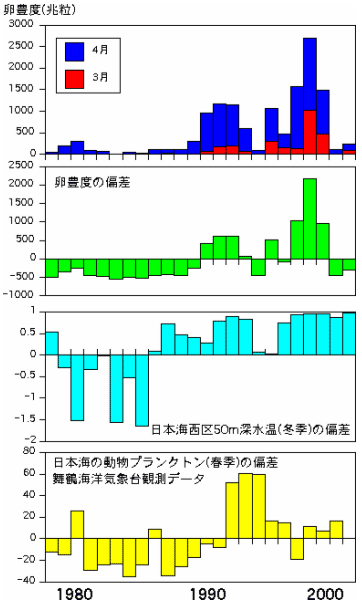

カタクチイワシの卵豊度をみると、1990年代に増加しており、うち3月の卵豊度の割合が高くなっていることが分かりました。カタクチイワシはマイワシと違って産卵期が長いことが知られています。日本海西区の冬季の50m深の水温の偏差が負から正へ変化した年とややずれますが、1990年代に海水温が高めで推移し、卵豊度が増加しています。卵豊度の増加は親魚資源の増加を示しています。1990年代に水温が上昇するなどの海洋環境の変化によりマイワシ資源が減少し、競合条件の緩和からカタクチイワシの稚仔魚の生残率が高くなった可能性が考えられます。また、仔魚期から成魚期までの餌生物となる動物プランクトン量も1990年代に増加していることから、カタクチイワシの生き残りによい条件であったと考えています。
カタクチイワシの卵豊度と海水温の変動の推移
